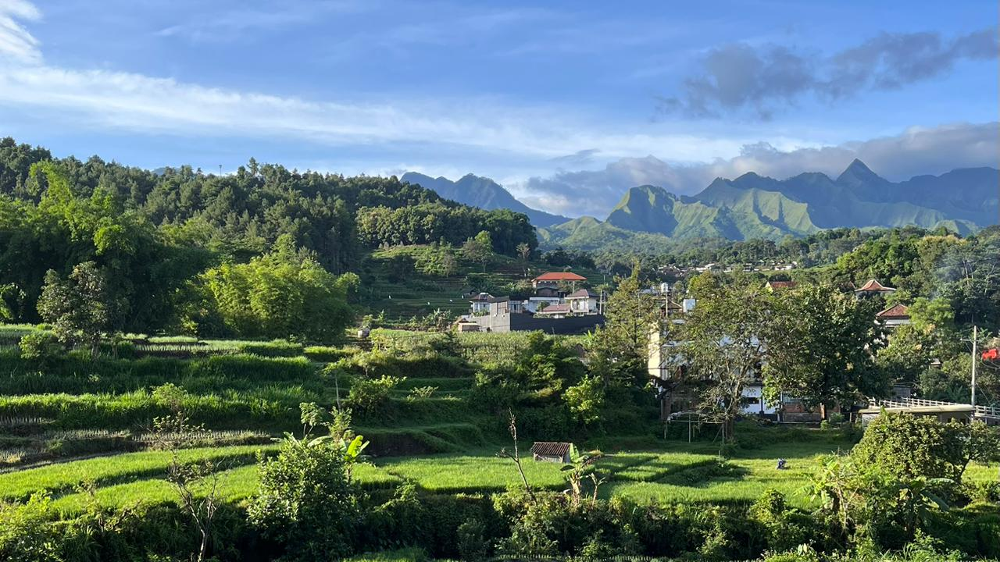
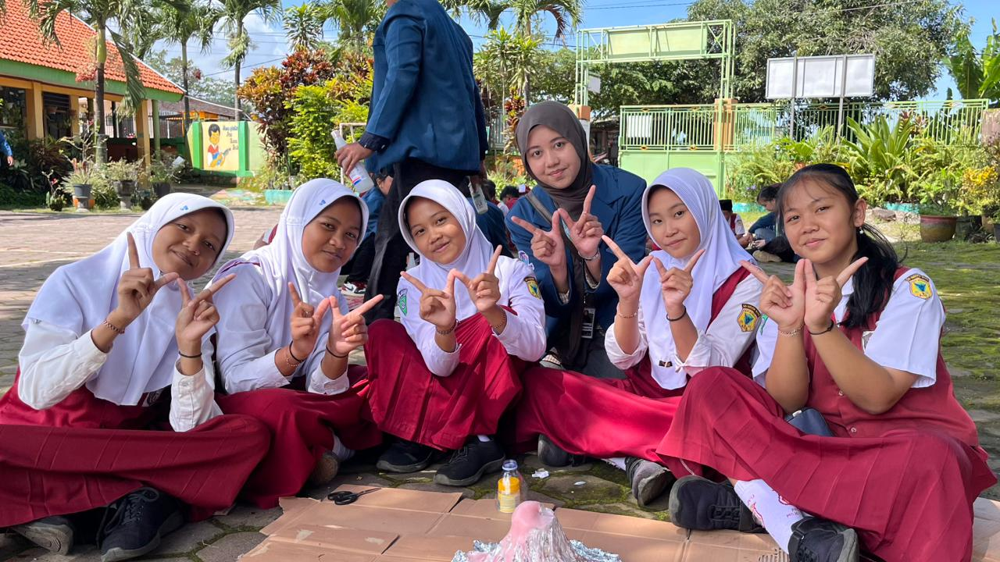
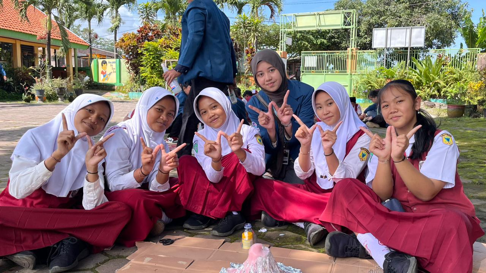
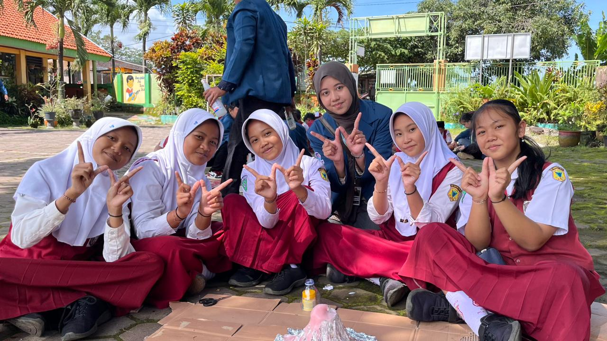
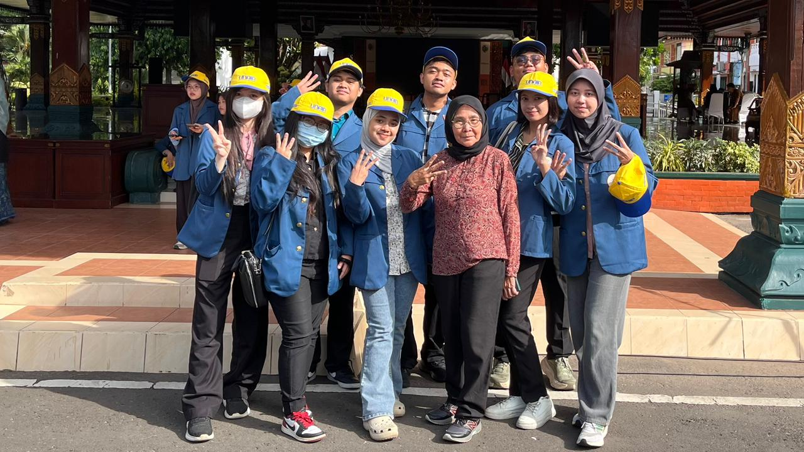

 


Selamat Datang di SAPA WIYU
SAPA WIYU merupakan platform promosi UMKM Desa Wiyu yang bertujuan mendukung pemberdayaan ekonomi masyarakat melalui pemanfaatan teknologi digital.

Kelompok KKN-BBK 7 Desa Wiyu 2025
Kelompok KKN Desa Wiyu merupakan mahasiswa Universitas Airlangga yang melaksanakan program pengabdian masyarakat dengan fokus pada pemberdayaan UMKM melalui digitalisasi, khususnya melalui program SAPA WIYU sebagai media promosi dan pendampingan UMKM desa.